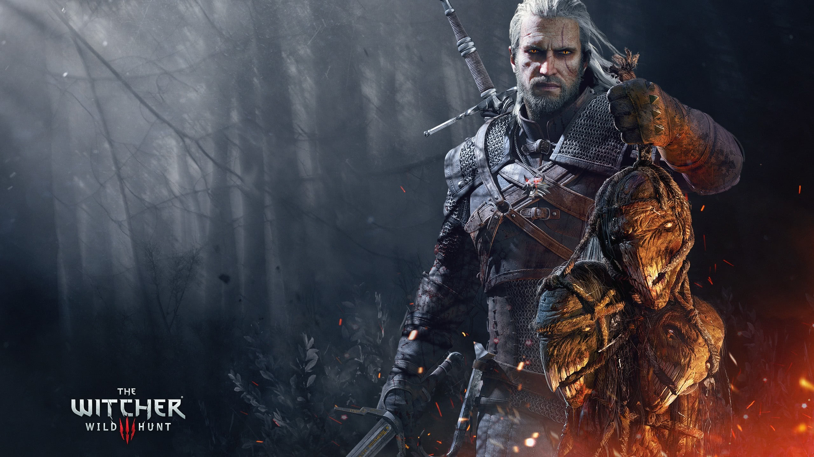

Spel
Mina favorit spel:
- The Witcher 3: Wild Hunt
- Horizon Zero Dawn
- Dark Souls 3
- Life is Strange
- Borderlands 2
| Spel | Genre | Utgivningsdatum | Multiplier | Plattform | Recension | Utgivare/Skapare |
|---|---|---|---|---|---|---|
| Dark Souls 3 | Action RPG | 12 april 2016 | Singleplayer & Multiplayer | PC, Xbox One, PlayStation 4 | 8.6/10 | FromSoftware, Bandai Namco Entertainment |
| Counter-Strike: Global Offensive | FPS | 21 augusti 2012 | Multiplayer | PC, Xbox 360, PlayStation 3 | 8.5/10 | Valve Corporation |
| Minecraft | Sandbox | 18 november 2011 | Singleplayer & Multiplayer | PC, Xbox, PlayStation, Switch, iOS, Android | 9.2/10 | Mojang |
| The Witcher 3: Wild Hunt | Action RPG | 19 maj 2015 | Singleplayer | PC, Xbox One, PlayStation 4, Nintendo Switch | 9.8/10 | CD Projekt |
| Grand Theft Auto V | Action-Adventure | 17 september 2013 | Singleplayer & Multiplayer | PC, Xbox, PlayStation | 9.3/10 | Rockstar Games |
| Red Dead Redemption 2 | Action-Adventure | 26 oktober 2018 | Singleplayer & Multiplayer | PC, Xbox One, PlayStation 4 | 9.7/10 | Rockstar Games |
| The Elder Scrolls V: Skyrim | Action RPG | 11 november 2011 | Singleplayer | PC, Xbox, PlayStation, Switch | 9.3/10 | Bethesda Game Studios |
| Life is Strange | Äventyr | 29 januari 2015 | Singleplayer | PC, Xbox, PlayStation | 8.7/10 | Dontnod Entertainment |
| Horizon Zero Dawn | Action RPG | 28 februari 2017 | Singleplayer | PlayStation 4, PC | 9.0/10 | Guerrilla Games |
| Borderlands 2 | Action RPG, First-Person Shooter | 18 september 2012 | Singleplayer & Multiplayer | PC, Xbox, PlayStation | 8.7/10 | 2K Games, Gearbox Software |
Bilder

Klicka på bilderna för att komma till respektive speltrailer!